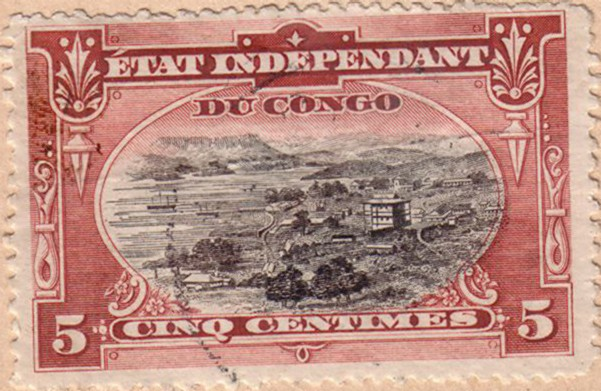
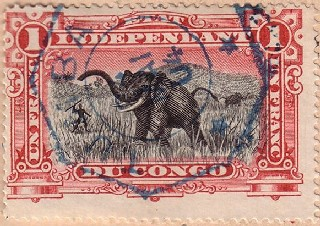
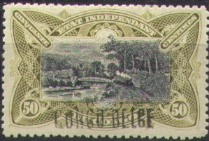

{kind=link}



Return To Catalogue - Belgian Congo 1886-1893 - Belgian Congo 1909-1920 and miscellaneous - Ruanda-Urundi
Note: on my website many of the
pictures can not be seen! They are of course present in the
catalogue;
contact me if you want to purchase it.
For previous issues of Belgian Congo (1886-1893), click here.
Inscription 'ETAT INDEPENDANT DU CONGO'



5 c blue and black (harbor) 5 c brown and black (harbor) 5 c green and black (harbor) 10 c brown and black (Stanley falls) 10 c green and black (Stanley falls) 10 c red and black (Stanley falls) 15 c yellow and black (palm trees) 25 c yellow and black (Inkissi falls) 25 c blue and black (Inkissi falls) 40 c green and black (canoes) 50 c green and black (bridge) 50 c olive and black (bridge) 1 F violet and black (elephant hunting) 1 F red and black (elephant hunting) 3 F 50 c red and black (village) 5 F red and black (native people) 10 F green and black (steamship)
Most of these stamps are perforated 14 (exceptions are indicated below).
Value of the stamps |
|||
vc = very common c = common * = not so common ** = uncommon |
*** = very uncommon R = rare RR = very rare RRR = extremely rare |
||
| Value | Unused | Used | Remarks |
| 5 c blue and black | * | * | |
| 5 c brown and black | * | * | |
| 5 c green and black | * | c | 1900 |
| 10 c brown and black | * | * | |
| 10 c green and black | c | c | Exists with inverted center: RRR |
| 10 c red and black | * | c | 1900 |
| 15 c | * | c | |
| 25 c yellow and black | * | * | |
| 25 c blue and black | * | * | |
| 40 c | * | * | |
| 50 c green and black | c | c | |
| 50 c olive and black | * | c | |
| 1 F violet and black | *** | ** | Two shades of violet were issued |
| 1 F red and black | R | * | |
| 3 F 50 c | R | R | Also exists with perforation 12 x 14: RR |
| 5 F | *** | *** | |
| 10 F | *** | ** | Exists with perforation 14 (**), 12 (**) or 12 x 14 (RR) |
Overprinted 'CONGO BELGE' (1908)




5 c green and black (harbor) 10 c red and black (Stanley falls) 15 c yellow and black (palm trees) 25 c blue and black (Inkissi falls) 40 c green and black (canoes) 50 c olive and black (bridge) 1 F violet and black (elephant hunting) 1 F red and black (elephant hunting) 3 F 50 c red and black (village) 5 F red and black (native people) 10 F green and black (steamship)
For the specialist: this overprint was done in Brussels (machine overprint or overprinted by hand) or in Congo itself (overprinted by hand only).
Value of the stamps |
|||
vc = very common c = common * = not so common ** = uncommon |
*** = very uncommon R = rare RR = very rare RRR = extremely rare |
||
| Value | Unused | Used | Remarks |
| Cheapest overprint | |||
| 5 c | c | c | |
| 10 c | * | * | |
| 15 c | * | * | |
| 25 c | * | * | |
| 40 c | * | * | |
| 50 c | * | * | |
| 1 F violet and black | R | R | |
| 1 F red and black | ** | * | |
| 3 F 50 c | *** | *** | |
| 5 F | *** | *** | |
| 10 F | *** | ** | |


A forgery of the 5 c, 10 c, 50 c and 1 F values, possibly made by
Kamigata.
For stamps in similar design but with inscription 'CONGO BELGE' issued from 1909 to 1920 and miscellaneous, click here.